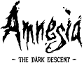
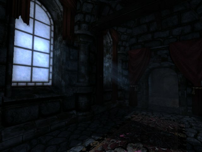
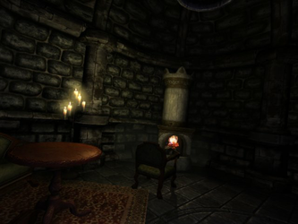
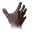
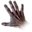
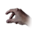
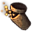
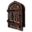
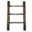
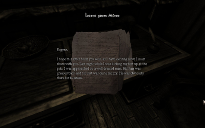

Amnesia - The Dark Descent
Dieser Artikel wurde für die folgenden Ubuntu-Versionen getestet:
Ubuntu 14.04 Trusty Tahr
Zum Verständnis dieses Artikels sind folgende Seiten hilfreich:

Amnesia: The Dark Descent  ist ein Horror-Adventure, welches vom schwedischen Spiele-Hersteller Frictional Games entwickelt wurde. Es trug den Arbeitstitel Lux Tenebras/Unknown und entläßt den Spieler ins 19. Jahrhundert. Wie bei der Penumbra-Reihe spielt man dieses Adventure in der Egoperspektive,
ist ein Horror-Adventure, welches vom schwedischen Spiele-Hersteller Frictional Games entwickelt wurde. Es trug den Arbeitstitel Lux Tenebras/Unknown und entläßt den Spieler ins 19. Jahrhundert. Wie bei der Penumbra-Reihe spielt man dieses Adventure in der Egoperspektive,
Der Protagonist wacht in einer dunklen, scheinbar unbewohnten Burg auf ohne sich daran erinnern zu können wer er ist und wie er dorthin gelangte. Das einzige woran er sich erinnert ist, dass er Daniel heißt und vor etwas auf der Flucht ist...
|  |  |
| Spielszene | Spielszene |
Installation¶
Desura¶
Das Spiel kann über die Internetseite oder den Client zur Spieleliste hinzugefügt und gestartet werden [4].
Frictional Games Store¶
In der Vergangenheit konnte das Spiel über den Frictional Games Store erworben werden - jedoch nutzt man nun andere Vertriebswege . Nutzer der "alten" Version müssen nach der Installation des Spiels den passenden Patch einspielen.
Humble Bundle¶
Das Spiel aus der Aktion The Humble Indie Bundle V oder aus dem Humble Store herunterladen und installieren [1] [2]:
./amnesia_tdd_1.0.sh
Nach erfolgreicher Installation lässt sich das Spiel im Menü unter unter "Anwendungen → Spiele → Amnesia" oder über über die Datei /opt/amnesia/Launcher.bin starten.
Steam¶
Das Spiel kann über die Internetseite oder den Client erworben und über letzteren installiert sowie gestartet werden [5].
Patch¶
Ältere Versionen bis einschließlich 1.0.1.2 sollten gepatcht werden. Der Patch zur Aktualisierung auf Version 1.2 kann von patches-scrolls.com  herunterladen werden. Vor der Installation muss die Datei noch ausführbar [1] gemacht werden.
herunterladen werden. Vor der Installation muss die Datei noch ausführbar [1] gemacht werden.
Hinweis:
Beim ersten Start wird die Seriennummer benötigt, welche man per E-Mail erhalten hat.
Bedienung¶
Das Spiel wird über die Tastatur und mit der Maus gesteuert. Sobald das Spiel startet können Einstellungen, unter anderem die Grafik betreffend und zur Soundkarte , für den Computer vorgenommen werden. Weitere Optimierungen sind im Spielemenü unter "Optionen" weiterhin möglich. Dieses erreicht man über Esc .
| Grundlegenden Interaktion | |
| Cursor | Beschreibung |
|  | Interaktionen mit dem fokussierten Objekt. |
|  | Objekte schieben - die linke Maustaste  in Verbindung mit den Bewegungstasten um es in die gewünschte
Richtung zu bewegen. Ein in Verbindung mit den Bewegungstasten um es in die gewünschte
Richtung zu bewegen. Ein  Rechtsklick gibt dem jeweiligen Objekt einen heftigen Stoß. Rechtsklick gibt dem jeweiligen Objekt einen heftigen Stoß. |
|  | Gegenstand in das Inventar aufnehmen. |
|  | Lichtquelle mit der Zunderbüchse entzünden (). |
|  | Neues Level betreten. |
|  | Linksklick um auf ein Objekt zu klettern - Rechtsklick oder
Leertaste um herunterzuklettern. |
|  |
| La Caza |
Mods¶
Modifikationen können von moddb.com heruntergeladen werden. Diese im Spieleordner unter custom_stories entpacken [3] und über das Hauptmenü starten.
Demo¶
Eine Demo-Version des Spiels kann von der Herstellerseite oder bei holarse-linuxgaming.de heruntergeladen und installiert werden. Nachdem das Skript durchgelaufen ist findet man unter "Anwendungen -> Spiele" zwei Starter. Mit "Amnesia - The Dark Descent Demo" startet man das Demo die Spielanleitung ist unter "Amnesia - The Dark Descent Spielanleitung" zu finden.
Deinstallation¶
Zur Deinstallation das Skript uninstall.sh im Installationverzeichnis ausführen [2]:
./uninstall.sh
Tastenkürzel¶
| Amnesia | |
| Taste(n) | Funktion |
| W + A + S + D | Bewegen |
| Maus bewegen | Sich umsehen |
| Esc | Hauptmenü öffnen / Im Menü zurückgehen |
| Tab ⇆ | Inventar anzeigen |
| J | Tagebuch öffnen |
| M | Memos öffnen |
| N | Neueste Texte öffnen |
| Interaktion |
| Objekt werfen |
| R | Aufgenommenes Objekt drehen |
 | Aufgenommenes Objekt aus der Nähe betrachten |
| Springen | |
| Strg | Ducken |
| ⇧ | Laufen |

Infobox¶
| Amnesia: The Dark Descent | |
| Originaltitel: | Amnesia: The Dark Descent |
| Genre: | Horror-Adventure |
| Sprache: |     |
| Veröffentlichung: | 2010 |
| Publisher: | Frictional Games |
| Systemvoraussetzungen: | > 2 Ghz Prozessor / > 2 GB RAM / 2.5 GB Festplattenplatz / ATI-Radeon HD oder GeForce 6 Grafikkarte |
| Medien: | Download |
| Läuft mit: | nativ |
- Erstellt mit Inyoka
-
 2004 – 2017 ubuntuusers.de • Einige Rechte vorbehalten
2004 – 2017 ubuntuusers.de • Einige Rechte vorbehalten
Lizenz • Kontakt • Datenschutz • Impressum • Serverstatus -
Serverhousing gespendet von